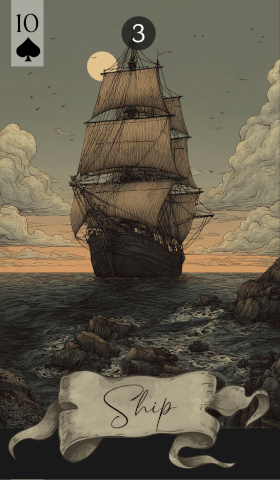

第 3 张 · 黑桃 10
船
旅行
远行
距离
冒险
拓展
船驶向新的地平线，承载着旅行、冒险与探索的气息。无论你横渡的是海洋，还是尚未想通的念头，船都代表着朝远方目标的移动。
免费抽牌 →
船邀请你把眼光放到现有边界之外。这是一张关于旅行与探索的牌，催促你往外走——可能是真的启程，也可能是一段隐喻意义上的远行。它带着对陌生海岸、异国文化的期待，也带着世界观被撑开的可能。这种移动可以是身体上的，也可以是人生里那些像冒险一样的过渡。
这张牌常指涉带有一定距离的行程，适合用来谈旅行、贸易与探索。它意味着从一处到另一处的推进，其间通常隔着距离。船也可以指向贸易、海外的生意，或那些像是踏入未知领域的机会。它在召唤你以勇气和乐观去迎接未知。
在爱情里，船暗示一段像旅程的关系，或一段异地恋。它也可能指向一位因工作而常在路上的伴侣，或是两人一同去看新风景的愿望。对单身的人，这张牌可以意味着在旅途中遇见某人，或把寻找爱的范围拓到熟悉环境之外。以开放的心，去接住爱里的冒险成分。
在事业上，船标记那些牵涉出差、迁居或把生意做到海外的机会。它可以意味着一次带冒险意味的工作变动，或一个需要打进新市场的项目。你可能需要在不同文化或不同行业之间周旋——这说明你的职业路径正在变宽，随之而来的既有新挑战，也有新回报。
船的建议是：定下航向，走出熟悉的范围。对新的经验保持开放，做好驶入陌生水域的准备。无论那是一次搬迁、一个新项目，还是一段向内的旅程，都请相信自己的导航能力。接住这场冒险，让它把你的视野拓开。
船很少独自航行，它的航程与终点都由身边的牌决定。以下按牌序，列出船与其余 35 张牌的读法：
传统图像是一艘航行在开阔海面上的帆船，象征冒险、探索，以及未知带来的牵引。在雷诺曼里，它说的是那股漂泊的心气，是对移动与发现的需要。现代的解读或许会把它读成飞行，甚至是数字世界里的探索，但它的核心始终是：地平线之外的东西所带来的吸引力。